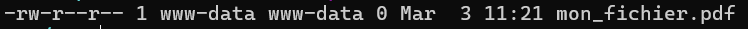
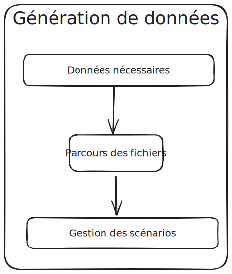
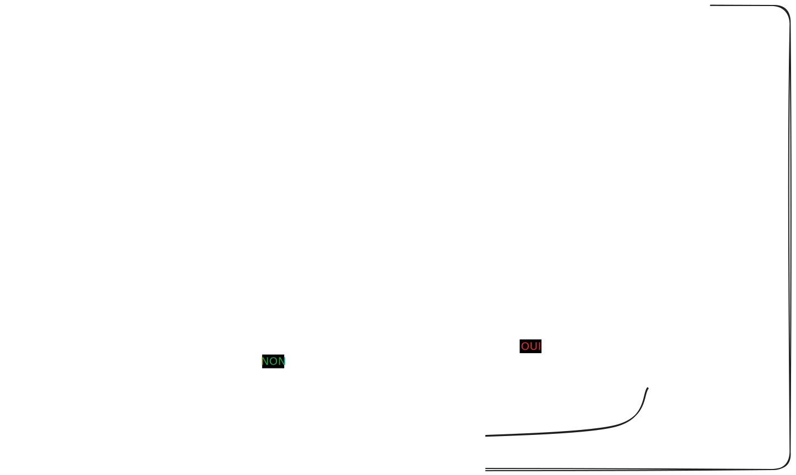

Fixtures et si on allait au-delà des données
Quand vous arrivez sur un projet…
L’installation …


Et les données ?


Qui suis-je ?
Nicolas
Développeur PHP, Symfony
TechLead, Architecte

onepoint BDX
La stack technique


Des demandes et des utilisateurs
Demandeur
Demande
Intervenant
l’instruction

Fixtures
$toto = new Toto();
$toto->setToto('truc');
assertEquals($toto->getToto(), 'truc');FixtureBundle
class AppFixtures extends Fixture
{
public function load(ObjectManager $manager): void
{
$objet = new Object();
$this->addReference("reference", $objet);
$this->getReference("reference", $objet::class);
}
}FixtureBundle
class AppFixtures extends Fixture implements DependentFixtureInterface
{
public function getDependencies(): array
{
return [];
}
}Première fixture
class AppFixturesBasis extends Fixture
{
public function load(ObjectManager $manager): void
{
$demandeur = new Demandeur();
$demandeur->setEmail('test@test.test');
$demandeur->setFirstname('John');
$demandeur->setLastname('Doe');
$demandeur->setRoles([Role::ROLE_DEMANDEUR->name]);
$manager->persist($demandeur);
$manager->flush();
$this->addReference('DEMANDEUR', $demandeur);
}
}Créons donc un Candidat.
public function load(ObjectManager $manager): void
{
$candidate = new Candidate();
$candidate->setFirstName("John");
->setLastName("Doe")
->setEmail("john.doe@test.test")
->setSiren("123456789")
->setName("Société")
->setPassword("motDePasse");
$this->candidateService->create($candidate);
}La notion de périmètre
class GeographicDataFixtures extends Fixture
{
public function load(ObjectManager $manager): void
{
$this->departementRegionCommand->execute($this->input, $this->output);
$this->epcisCommand->execute($this->input, $this->output);
$this->communesCommand->execute($this->input, $this->output);
}
}
class AppFixtures extends Fixture
{
public function getDependencies(): array
{
return [
GeographicDataFixtures::class,
];
}Les intervenants
class IntervenantFixtures extends Fixture implements DependentFixtureInterface
{
public function getDependencies(): array
{
return [
GeographicDataFixtures::class,
];
}
public function load(ObjectManager $manager): void
{
foreach ($this->departementRepository->findAll() as $departement) {
$instructeur = new Intervenant();
$email = "instructeur_{$dpt->getCode()}@test.test";
$instructeur->setFirstName('Instructeur')
->setLastName($departement->getNom())
->setEmail($email)
->setRoles([Role::ROLE_INSTRUCTEUR->name])
->setPerimetreSupervision((new PerimetreIntervention())->addDepartement($dpt));
$this->intervenantService->create($instructeur);
$this->addReference('INSTRUCTEUR_' . $dpt->getCode(), $instructeur);
}
}
}Les intervenants
class DemandeFixtures extends Fixture implements DependentFixtureInterface
{
public function getDependencies(): array
{
return [
GeographicDataFixtures::class,
IntervenantFixtures::class,
];
}Passons donc aux demandes
$candidate = $this->creeDemandeur("John", "Doe", "john.doe@test", "123456789", "Société", "motDePasse");
$candidate->getUser()->setRoles([Role::ROLE_DEMANDEUR->name]);
$commune = $this->communeRepository->findOneBy(['nom' => 'Bordeaux']);
$param = [
'demandeur' => [
'tel' => '+33600000000',
'company' => [
'creationDate' => '2024-01-01',
'formeJuridique' => 'autres',
'perimetreIntervention' => ['departement' => $commune->getDepartement()->getNom()],
],
],
'adresse' => [
'adresse1' => 'numéro, nom de la voie',
'adresse2' => 'complément adresse',
'codePostal' => $commune->getCodePostaux()[0],
'codeDepartement' => $commune->getDepartement()->getCode(),
'ville' => $commune->getNom(),
],
];
return $this->demandeService->creeDemande($demandeur, $param);La problématique des fichiers


public function createUploadedFile(string $nom): UploadedFile
{
$this->filesystem->copy(
originFile:'/var/www/html/src/DataFixtures/test_files/test.pdf',
targetFile: "/tmp/$nom",
overwriteNewerFiles: true);
return new UploadedFile("/tmp/$nom", $nom, 'application/pdf', test: true);
}
public function addPjsBrouillon(
DemandeAgrement $demande,
string $nom,
string $codeTypePj,
): PieceJointe {
return $this->pieceJointeService->createPieceJointe(
new PieceJointeModel(
nom: $nom,
fichier: $this->fixtHelpers->createUploadedFile($nom),
demande: $demande,
user: $demande->getDemandeur(),
codeTypePj: $codeTypePj
)
);
}Demandes & fichiers
$demande = $this->getReferece('DEMANDE', Demande::class);
foreach (Demande::Procedure as $typePj) {
$this->fixtureService->addPjsBrouillon(
demande: $demande,
nom: "test_{$type}.pdf",
codeTypePj: $typePj->code()
);
}Ce n’est que le début de l’histoire

Ce n’est que le début de l’histoire


Dépôt d’une demande
$demande = $this->getReferece('DEMANDE', Demande::class);
$demandeur = $this->getReferece('DEMANDEUR', Demandeur::class);
$this->demandeService->deposer(user: $demandeur, demande: $demande);Dépôt d’une demande

Demande de complément et réponse

Et on continue le parcours
$demande = $this->getReferece('DEMANDE', Demande::class);
$demandeur = $this->getReferece('DEMANDEUR', Demandeur::class);
$instructeur = $this->getReferece('INSTRUCTEUR_33', Intervenant::class);
$superviseur = $this->getReferece('SUPERVISEUR_75', Intervenant::class);
$this->demandeService->affecterDemande(user: $superviseur, demande: $demande, instructeur: $instructeur);
$this->demandeService->demanderComplément(user: $instructeur, demande: $demande, commentaire: 'Commentaire');
$this->demandeService->addPjsBrouillon($demande, "complement1.pdf", "complement");
$this->demandeService->addPjsBrouillon($demande, "complement2.pdf", "complement");
$this->demandeService->donnerComplement(user: $demandeur, demande: $demande);
$this->demandeService->confirmerCompletude(user: $instructeur, demande: $demande);La demande est complète.

Il est temps de voyager

SymfonyClock
use function Symfony\Component\Clock\now;
/* Get the current time as a DatePoint instance */
$now = now();
Clock::set(new MockClock("2024-01-01"));
Clock::set(new NativeClock());Figeons le temps
Clock::set(new MockClock("2024-06-01"));
$this->demandeService->affecterDemande(user: $superviseur, demande: $demande, instructeur: $instructeur);
Clock::set(new MockClock("2024-06-08"));
$this->demandeService->demanderComplément(user: $instructeur, demande: $demande, commentaire: 'Commentaire');
Clock::set(new MockClock("2024-06-16"));
$this->demandeService->addPjsBrouillon($demande, "complement1.pdf", "complement");
Clock::set(new MockClock("2024-07-01"));
$this->demandeService->addPjsBrouillon($demande, "complement2.pdf", "complement");
Clock::set(new MockClock("2024-07-22"));
$this->demandeService->donnerComplement(user: $demandeur, demande: $demande);Figeons le temps
Clock::set(new MockClock("2024-07-23"));
$this->demandeService->affecterDemande(user: $superviseur, demande: $demande, instructeur: $instructeur);
Clock::set(new MockClock("2024-07-31"));
$this->demandeService->demanderComplément(user: $instructeur, demande: $demande, commentaire: 'Commentaire');
Clock::set(new MockClock("2024-09-01"));
$this->demandeCommand->checkDelaiReponse();
Clock::set(new MockClock("2024-09-02"));
$this->demandeService->refuserDemande(user: $instructeur, demande: $demande, commentaire: 'Hors délai');En résumé
Données géographiques
Intervenant
Demandeur
Fichiers
Demandes
Le temps
Outillons-nous

Ecrivons un scénario
John Doe dépose une demande d’agrément, qui est instruite par un instructeur et un superviseur.
— Qui fait quoi
John Doe dépose une demande d’agrément sur la gironde qui est instruite par l’instructeur Gironde et le superviseur Nouvelle Aquitaine.
— que fait-on
John Doe dépose une demande d’agrément le 20 janvier sur la gironde qui est instruite le 15 février par l’instructeur Gironde et le superviseur Nouvelle Aquitaine, le premier mars
— Quand le fait-on ?
Décrivons cette histoire
demandeur:
email: "john.doe@test"
prenom: "John"
nom: "Doe"
date_creation: "20/01/2023"
telephone: "+33612345678"
qualite: "qualite"
societe:
nom_societe: "MaSociete ÔSiren"
email: "company@boite.mail"
siren: "123456789"
telephone: "+33612345678"
forme_juridique: "autres"
adresse:
adresse1: "numéro, nom de la voie"
adresse2: "complément adresse"
commune: "Bordeaux"
perimetre_intervention:
departements: [33]
regions: []
precisions: ""
date_creation: "2023-01-20T10:00:00+02:00"
date_modification: "2023-01-20T12:00:00+02:00"Il manque un pitch
description: "Mon premier cas de test"
demandeur:
email: "john.doe@test"
date_creation: "2023-01-20T10:00:00+02:00"
societe:
siren: "123456789"
commune: "Bordeaux"
perimetre_intervention:
departements: [33]
qualite: "qualite"
date_creation: "2023-01-20T10:00:00+02:00"
date_modification: "2023-01-20T10:00:00+02:00"Traitons notre scénario
$demandeConfig = Yaml::parseFile($file->getRealPath());
$description = "\n - {$demandeConfig['description']}" : '';
$user = "\n - Demandeur : {$demandeConfig['demandeur']['email']}";
$this->io->info("Traitement fichier : {$file->getFilename()} $user $description ");
Clock::set((new MockClock($demandeConfig['demandeur']['date_creation'])));
$demandeur = $this->demandeurFixturesService->createDemandeur($demandeConfig);
$this->setReference('DEMANDEUR', $demandeur);
Clock::set((new MockClock($demandeConfig['date_creation'])));
$demande = $this->demandeFixturesService->createDemande($demandeConfig, $demandeur);
Clock::set((new MockClock($demandeConfig['date_modification'])));
$this->demandeFixturesService->completeDemande($demande);actions:
-
user: DEMANDEUR
action: DEPOSER
date: '2024-01-14T10:00:00+02:00'
-
user: SUPERVISEUR_75
action: AFFECTER_INSTRUCTEUR
date: '2024-01-16T08:00:00+02:00'
payload:
instructeur: 'INSTRUCTEUR_33'
-
user: INSTRUCTEUR_33
action: DEMANDER_COMPLEMENT
date: '2024-01-18T18:00:00+02:00'
payload:
commentaire: 'Demande de complément'
-
user: DEMANDEUR
action: AJOUT_FICHIER
date: '2024-01-25T10:00:00+02:00'
payload:
file_name: 'complement_pj1.pdf'
-
user: DEMANDEUR
action: DONNER_COMPLEMENT
date: '2024-01-25T10:15 :00+02:00'Gestion des actions
public function parcoursAction(array $demandeConfig, Demande $demande): void
{
foreach ($demandeConfig['actions'] as $action) {
$user = $action['user'];
match ($action['action']) {
'depose' => $this->demandeService->depose($user, $demande),
'affecte' => $this->demandeService->affecte($user, $demande, $action['payload']),
'complete' => $this->demandeService->complete($user, $demande),
};
}
}

description: '<a_modifier>'
demandeur:
email: "<a_modifier>"
prenom: "Prénom Test"
nom: "Nom Test"
date_creation: "<a_modifier>"
telephone: "+33612345678"
signataire:
nom: "Nom Signataire"
prenom: "Prénom Signataire"
qualite: "signataireQuality"
societe:
nom_societe: "MaSociete ÔSiren"
email: "company@boite.mail"
siren: "<a_modifier>"
telephone: "+33612345678"
forme_juridique: "autres"
adresse:
adresse1: "numéro, nom de la voie"
adresse2: "complément adresse"
commune: "<a_modifier>"
perimetre_intervention:
departements: "<a_modifier>"
regions: "<a_modifier>"
precisions: "<a_modifier>"
qualite: "<a_modifier>"
date_modification: "<a_modifier>"
date_creation: "<a_modifier>"Et si on allait encore plus loin
Et les mots de passes…
1Ajohn.doe@test
Une nouvelle action ?
Ça ne fait pas le café, mais presque !
On a perdu la recette
Un film, on en fait la promo.
| Demandeur | Superviseur | Instructeur | Périmètre | etat | Fichier de fixtures |
|---|---|---|---|---|---|
cas-1@test | superviseur_75@test | instructeur_24@test | Dordogne | agree | scenario_1.yml |
cas-2@test | superviseur_75@test | instructeur_33@test | Nouvelle-Aquitaine, Occitanie | refuse | scenario_2.yml |
cas-3@test | superviseur_75@test | instructeur_33@test | Nouvelle-Aquitaine, Occitanie | incomplete | scenario_3.yml |
cas-4@test | superviseur_75@test | Landes, Lot & Garonne, Hautes-Pyrénées, Pyrénées Atlantiques | deposee | scenario_4.yml |
|=== |Demandeur | Superviseur | Instructeur | Périmètre | etat | Fichier de fixtures | cas-1@test | superviseur_75@test | instructeur_24@test | Dordogne | agree | scenario_1.yml |===
Vers une histoire collaborative.

Conclusion
Merci
Slides

Nicolas guérinet
Feedback